Aprendizaje no supervisado. Clustering¶
El aprendizaje no supervisado comprende un conjunto de técnicas cuyo objetivo es descubrir estructura oculta en los datos sin contar con etiquetas. A diferencia del aprendizaje supervisado, donde disponemos de pares entrada-salida \((\mathbf{x}_i, y_i)\), aquí solo tenemos las observaciones \(\mathbf{x}_i\) y buscamos que el algoritmo encuentre patrones en los datos por sí solo. Dentro de este tipo de aprendizaje, los métodos más representativos son los de clustering, que buscan encontrar agrupaciones dentro de los datos.
Familias de métodos no supervisados¶
Antes de centrarnos en los métodos de clustering, vamos a realizar una revisión más amplia del aprendizaje no supervisado, identificando, además del clustering, qué otras tareas se pueden abordar mediante este tipo de aprendizaje. Las principales familias de métodos que encontramos son:
-
Clustering: agrupa las observaciones en grupos (clusters) de forma que los elementos dentro de un grupo sean similares entre sí y distintos de los de otros grupos. Nos centraremos principalmente en esta familia de métodos.
-
Detección de anomalías: identifica observaciones que difieren significativamente del resto. Puede surgir como subproducto del clustering (identificando los puntos que ningún cluster captura bien) o como objetivo explícito con algoritmos dedicados como Isolation Forest.
-
Reducción de dimensionalidad: busca representaciones compactas de los datos que preserven su estructura esencial, eliminando redundancia. PCA, t-SNE y UMAP son los ejemplos más conocidos.
-
Modelos generativos: aprenden la distribución de probabilidad subyacente de los datos, de forma que permiten generar nuevas muestras. En esta familia se encuentran los Variational Autoencoders (VAEs), las Generative Adversarial Networks (GANs) o los modelos de difusión.
-
Aprendizaje de representaciones: el objetivo de esta familia de métodos es aprender representaciones o features útiles de los datos (embeddings) que capturen su estructura interna. Para ello, utilizan señales de supervisión (variables objetivo) extraídas automáticamente de los propios datos sin etiquetar. Por ello, hablamos en este caso de Self-Supervised Learning (SSL). Las representaciones aprendidas pueden usarse después en tareas posteriores (downstream tasks) como clasificación o clustering. Dentro de este grupo encontramos por ejemplo los Autoencoders y métodos para encontrar embeddings de tokens en el texto como BERT o Word2Vec.
-
Estimación de densidad: su objetivo es modelar la distribución subyacente de los datos. En esta familia se encuentran también los Variational Autoencoders (VAEs), y métodos paramétricos como Gaussian Mixture Models (GMM) y no paramétricos como Kernel Density Estimation (KDE).
-
Reglas de asociación: su objetivo es descubrir relaciones frecuentes entre elementos del conjunto de entrada. Apriori y FP-Growth son los algoritmos representativos de esta familia, y su aplicación más conocida es el análisis de cesta de la compra.
En este bloque nos centraremos especialmente en los métodos de clustering y dedicaremos una última sección a la detección de anomalías.
Introducción al clustering¶
El clustering o agrupamiento es la tarea de particionar un conjunto de observaciones de entrada \(\{\mathbf{x}_1, \mathbf{x}_2, \ldots, \mathbf{x}_N\}\) en un conjunto de grupos o clusters \(\{C_1, C_2, \ldots, C_K\}\) de forma que se maximice la similitud intra-cluster (entre ejemplos que pertenezcan al mismo cluster) y se minimice la similitud inter-cluster (entre ejemplos que pertenezcan a diferentes clusters). El número de grupos \(K\) puede ser especificado a priori o determinado automáticamente según el método.
Familias de métodos de clustering¶
A partir de esta idea general surgen diferentes familias de métodos de clustering:
-
Particionamiento: divide los datos en \(K\) grupos mutuamente excluyentes. Requiere especificar \(K\) de antemano. K-Means es el representante más claro, siendo el algoritmo de clustering más sencillo y más conocido. Este algoritmo itera asignando cada punto al centroide más cercano y actualizando los centroides hasta convergencia. Es eficiente y escalable, pero asume clusters esféricos de tamaño similar.
-
Jerárquico: construye una jerarquía de agrupamientos representada en un dendrograma. No requiere especificar \(K\) a priori, sino que el número de clusters se elige a posteriori cortando el árbol a la altura deseada. Veremos en detalle el enfoque aglomerativo.
-
Métodos basados en grafos: representan los datos como un grafo y detectan comunidades o cortes mínimos. Dentro de este grupo encontramos métodos como Affinity Propagation, o bien enfoques de clustering espectral basados en teoría espectral de grafos. Veremos también con mayor detalle el método de clustering espectral.
-
Basado en densidad: define los clusters como regiones de alta densidad separadas por zonas de baja densidad. No asume una forma convexa de los clusters y detecta automáticamente outliers. DBSCAN es el representante más conocido, y lo estudiaremos en la siguiente sesión.
-
Probabilístico (soft clustering): en lugar de asignar cada punto a un único cluster, asigna una probabilidad de pertenencia a cada uno. Los Gaussian Mixture Models (GMM) son el ejemplo más destacado: modelan los datos como una mezcla de distribuciones gaussianas y se ajustan mediante el algoritmo EM. También los veremos en la siguiente sesión.
Una distinción conceptual importante es la que hay entre hard clustering y soft clustering. En el hard clustering (K-Means, jerárquico, espectral, DBSCAN) cada punto pertenece exactamente a un cluster. En el soft clustering (GMM) cada punto tiene un vector de probabilidades de pertenencia a cada cluster, lo que captura mejor la incertidumbre en la asignación.
Métricas de distancia y similitud¶
Todo algoritmo de clustering necesita un indicativo de la similitud o distancia entre puntos. Esto determinará qué significa que dos observaciones estén "cerca". La elección de la métrica no es un detalle menor, ya que puede cambiar completamente los clusters que encuentra el algoritmo.
Dado un espacio de características \(\mathbb{R}^d\), una métrica de distancia \(d(\mathbf{x}, \mathbf{y})\) debe satisfacer cuatro propiedades:
- No negatividad: \(d(\mathbf{x}, \mathbf{y}) \geq 0\)
- Identidad de los indiscernibles: \(d(\mathbf{x}, \mathbf{y}) = 0 \Leftrightarrow \mathbf{x} = \mathbf{y}\)
- Simetría: \(d(\mathbf{x}, \mathbf{y}) = d(\mathbf{y}, \mathbf{x})\)
- Desigualdad triangular: \(d(\mathbf{x}, \mathbf{z}) \leq d(\mathbf{x}, \mathbf{y}) + d(\mathbf{y}, \mathbf{z})\).
A continuación detallamos las métricas más utilizadas en clustering.
Distancia euclídea (norma \(\ell_2\)): Se trata de la distancia en línea recta entre dos puntos, calculada como:
Es la métrica por defecto en la mayoría de algoritmos de clustering. Implícitamente asume que todas las variables tienen la misma escala y el mismo peso, lo que hace imprescindible el escalado previo, como veremos a continuación. Es sensible a outliers y sufre la maldición de la dimensionalidad (en espacios de alta dimensión las distancias entre pares de puntos tienden a concentrarse alrededor de un valor típico).
Distancia de Manhattan (norma \(\ell_1\)). Se calcula como la suma de las diferencias absolutas en cada dimensión:
Es más robusta que la distancia euclídea frente a outliers, porque las diferencias grandes no se elevan al cuadrado. En alta dimensionalidad puede superar a la distancia euclídea, ya que la norma \(\ell_1\) concentra menos la distribución de distancias.
Distancia de Minkowski (norma \(\ell_p\)). Es la generalización paramétrica que engloba las dos métricas anteriores, y que se define como:
Podemos observar que para \(p=2\) tenemos la distancia euclídea, mientras que para \(p=1\) la de Manhattan. Cuando \(p \to \infty\) hablamos de la distancia de Chebyshev, que mide la mayor diferencia en cualquier dimensión. En la Figura 1 se muestra una comparativa de las métricas vistas hasta el momento.
{kind=link}
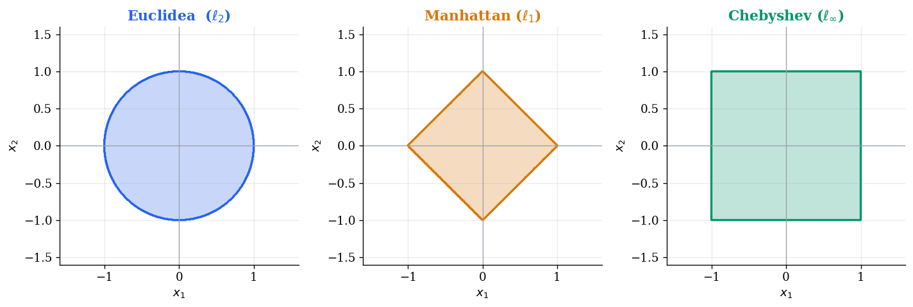
Similitud coseno y distancia coseno: Mide el ángulo entre dos vectores, ignorando su magnitud:
Es la métrica estándar para datos de texto. Cuando un documento se representa como un vector de pesos TF-IDF, donde cada dimensión corresponde a un término del vocabulario y su valor refleja cómo de característico es ese término para ese documento, la magnitud del vector depende de la longitud del documento pero no del tema. La similitud coseno elimina ese efecto al medir únicamente el ángulo entre vectores: dos documentos sobre el mismo tema con la misma distribución de términos tendrán similitud coseno cercana a \(1\) independientemente de su longitud. Lo mismo aplica a embeddings densos como Word2Vec o BERT, donde la dirección del vector codifica el significado y la magnitud varía por propiedades del entrenamiento, sin codificar nada útil.
En Figura 2 podemos ver un ejemplo del área que abarcarían todos los puntos cuya distancia coseno respecto a un punto \(\mathbf{p}\) es menor que diferentes umbrales.
{kind=link}
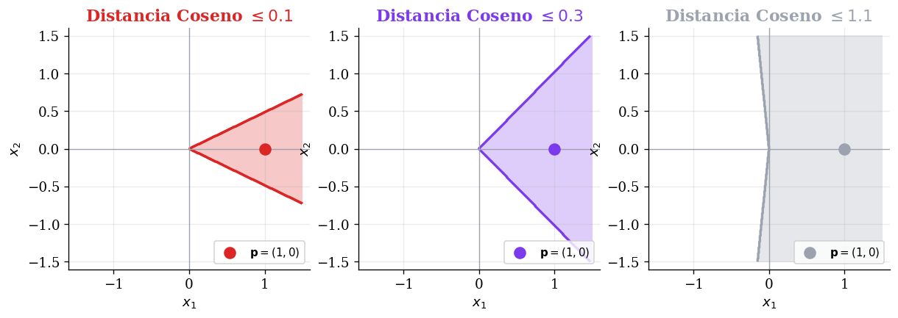
Distancia de correlación de Pearson: Mide la similitud en el patrón de variación, independientemente de la escala y del nivel medio,
Donde \(\bar{x}\) e \(\bar{y}\) son las medias de todas las features de \(\mathbf{x}\) e \(\mathbf{y}\) respectivamente:
Podemos observar que la métrica es similar a la distancia coseno, pero restando la media, lo cual hace que además de ser invariante a la escala, lo sea también al desplazamiento (valor medio). Esto es especialmente útil en bioinformática y análisis de series temporales, donde interesa agrupar perfiles de expresión génica o curvas con la misma forma aunque tengan distinta amplitud o estén desplazadas.
En la figura Figura 3 se muestra un ejemplo en el que nuestras features representan una serie temporal. Se muestran diferentes casos de comparación de una serie de referencia \(\mathbf{p}\) con otra serie a la que se le aplican una serie de transformaciones. En la primera y segunda fila, con transformaciones de escalado observamos que tanto la distancia coseno como la correlación de Pearson son \(0\). Sin embargo, cuando sumamos un valor constante a toda la serie, vemos que la correlación de Pearson sigue siendo invariante a la media y se mantiene en \(0\), pero la distancia coseno sube a \(0.67\). En la cuarta y quinta fila, cuando se introducen series que no están relacionadas con la de referencia, ambas distancias aumentan.
{kind=link}
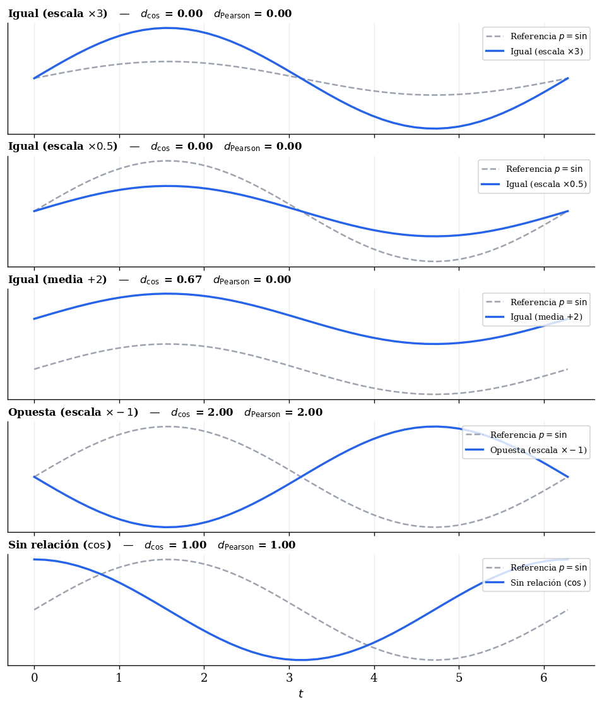
La tabla siguiente resume las propiedades más relevantes de cada métrica para orientar la elección:
| Métrica | Escala | Alta dimensionalidad | Uso principal |
|---|---|---|---|
| Euclídea (\(\ell_2\)) | Sensible | Concentración de distancias severa | Datos continuos bien escalados |
| Manhattan (\(\ell_1\)) | Sensible | Concentración de distancias moderada | Datos con outliers |
| Coseno | Invariante | Ruido de dimensiones irrelevantes | Texto, embeddings, vectores dispersos |
| Correlación | Invariante | Ruido de dimensiones irrelevantes | Series temporales, perfiles de expresión |
Preprocesado para clustering¶
A diferencia del aprendizaje supervisado, donde el riesgo de overfitting va a actuar como aviso de las malas decisiones de preprocesado, en clustering los algoritmos no tienen forma de corregir automáticamente problemas de escala o ruido, los propagan directamente al resultado. Encontramos consideraciones especialmente importantes: el escalado de variables y la maldición de la dimensionalidad.
Escalado de variables¶
Todos los métodos de clustering basados en distancias euclídeas (como por ejemplo K-Means) son sensibles a la escala de las variables. Si una variable tiene valores en el rango \([0, 1]\) y otra en el rango \([0, 10000]\), la segunda dominará completamente el cálculo de distancias y la primera quedará irrelevante.
La solución estándar es aplicar StandardScaler antes del clustering: transforma cada variable para que tenga media cero y desviación típica uno. En algunos casos puede ser preferible MinMaxScaler (cuando la distribución no es aproximadamente normal) o RobustScaler (cuando hay outliers que distorsionan la media y la desviación típica).
Nota: El escalado no siempre es deseable. Si las variables tienen unidades comparables y la diferencia de escala es informativa, escalar puede eliminar información relevante. Por ejemplo, en variables monetarias donde podemos tener por ejemplo "Salario" e "Incremento salarial", ambas en euros, escalarlas de forma independiente puede equiparar estadísticamente una diferencia de 500€ en el incremento con una diferencia de 20.000€ en el salario, cuando en realidad ambas magnitudes deberían ser comparables directamente en su escala original. La decisión debe basarse en el conocimiento del dominio.
Maldición de la dimensionalidad¶
En espacios de alta dimensión, todos los puntos tienden a estar aproximadamente a la misma distancia unos de otros (Aggarwal et al., 2001)1. Como hemos visto, esto afecta más a la distancia Euclídea que a la distancia de Manhattan, y en el caso de la generalización con la distancia de Minkowski el problema se agrava conforme incrementamos el valor de \(p\).
Esto hace que las diferencias de distancia que los algoritmos de clustering usan para separar grupos se diluyan progresivamente. Para más de unas pocas decenas de dimensiones, es habitual aplicar reducción de dimensionalidad (por ejemplo PCA o UMAP) antes del clustering, tanto para mejorar la calidad del resultado como para reducir el coste computacional.
PCA es adecuado para una reducción lineal eficiente, mientras que UMAP puede ser más apropiado cuando la estructura es no lineal. El método t-SNE puede resultar útil para visualizar el resultado del clustering, pero no como preprocesado.
Evaluación de clustering¶
Evaluar la calidad del clustering es más difícil que evaluar un clasificador supervisado, porque no existe una "solución correcta" con la que comparar directamente. Las métricas de evaluación se dividen en dos categorías según si se dispone o no de etiquetas de referencia.
Métricas internas¶
Las métricas internas evalúan la calidad del clustering usando únicamente los datos y las asignaciones producidas, sin necesidad de etiquetas externas. Son las únicas disponibles en un escenario completamente no supervisado, y muchas de ellas podrán ser utilizadas como criterio a la hora de determinar el número óptimo de clases \(K\).
Inercia y criterio del codo (Elbow): La inercia mide la suma de distancias al cuadrado (Within-Cluster Sum of Squares, WCSS) de cada punto al centroide \(\mathbf{\mu}_k\) de su cluster:
La inercia decrece monotónicamente con \(K\), porque añadir más clusters siempre reduce la dispersión interna. En el extremo \(K = N\) cada punto forma su propio cluster y la inercia es cero. Por lo tanto, a la hora de utilizar esta métrica como criterio para seleccionar la \(K\) óptima su utilidad no está en el valor absoluto sino en la forma de la curva al representarla frente a \(K\).
El criterio del codo (elbow method) busca el valor de \(K\) a partir del cual la reducción de inercia se vuelve marginal, es decir, el punto donde la curva deja de caer bruscamente y se aplana. La intuición es que, si existe una estructura real de \(K^*\) clusters en los datos, añadir clusters más allá de \(K^*\) fragmenta grupos naturales y produce ganancias de inercia cada vez menores.
En caso de que los datos no tengan estructura clara, el codo podría ser poco pronunciado, por lo que conviene utilizar este método junto a otros que veremos a continuación como Silhouette o CH. Si varios criterios convergen en el mismo \(K\), tendremos más confianza en esa elección.
A continuación podemos ver en un fragmento de código cómo representar la inercia frente a \(K\):
Ks = range(2, 11)
inercias = []
for k in Ks:
modelo = KMeans(n_clusters=k, n_init=10)
modelo.fit(X_scaled)
inercias.append(modelo.inertia_)
plt.figure(figsize=(6, 4))
plt.plot(Ks, inercias, marker='o')
plt.xlabel('Número de clusters K')
plt.ylabel('Inercia')
plt.title('Criterio del codo')
plt.show()
Nota: La inercia está definida para K-Means pero no directamente para otros algoritmos de clustering como el jerárquico o DBSCAN. Para métodos que no producen centroides, Silhouette o CH son las alternativas más adecuadas para seleccionar hiperparámetros equivalentes a \(K\).
Silhouette score (Rousseeuw, 1987)2: Para cada punto \(\mathbf{x}_i\), mide cómo de bien encaja en su cluster en comparación con el cluster vecino más cercano. Se define a partir de dos distancias medias:
- \(a(i)\): distancia media de \(\mathbf{x}_i\) a todos los demás puntos de su cluster (cohesión interna).
- \(b(i)\): distancia media de \(\mathbf{x}_i\) a todos los puntos del cluster vecino más próximo (separación externa).
El silhouette de un punto es:
El silhouette score global es la media de \(s(i)\) sobre todos los puntos, y toma valores en \([-1, 1]\). Un valor cercano a \(1\) indica que los clusters están bien separados y son compactos, un valor cercano a \(0\) indica que los puntos están en la frontera entre clusters, mientras que un valor negativo indica que los puntos están probablemente mal asignados. En la práctica, valores por encima de \(0.5\) suelen indicar una estructura de clustering razonablemente buena.
from sklearn.metrics import silhouette_score, silhouette_samples
# Score global (media sobre todos los puntos)
score = silhouette_score(X_scaled, etiquetas)
# Score por punto (útil para detectar puntos mal asignados)
scores_por_punto = silhouette_samples(X_scaled, etiquetas)
Índice de Davies-Bouldin (Davies & Bouldin, 1979)3: Para cada cluster \(C_k\) mide su similitud con el cluster más parecido a él, definida como el cociente entre la dispersión interna de ambos clusters y la distancia entre sus centroides:
Donde \(s_k\) es la distancia media de los puntos de \(C_k\) a su centroide \(\boldsymbol{\mu}_k\). A diferencia del silhouette, los valores más bajos son mejores. Un índice de Davies-Bouldin bajo indica clusters compactos y bien separados. No requiere cálculo punto a punto, lo que lo hace más eficiente en datasets grandes.
Índice de Calinski-Harabasz (Caliński & Harabasz, 1974)4 (también conocido como Variance Ratio Criterion): Mide la ratio entre la dispersión inter-cluster y la dispersión intra-cluster:
Podemos observar que en el numerador se suman las distancias al cuadrado del centroide de cada cluster \(\mathbf{\mu}_k\) al centroide global \(\mathbf{\mu}\), ponderadas por el número de ejemplos del cluster \(|C_k|\). El denominador suma las distancias al cuadrado de cada punto al centroide de su cluster, midiendo cómo de compacto es el cluster internamente. En este caso valores más altos son mejores. Es muy eficiente computacionalmente y especialmente útil para comparar soluciones con distintos valores de \(K\).
from sklearn.metrics import calinski_harabasz_score
ch = calinski_harabasz_score(X_scaled, etiquetas)
Nota: Ninguna métrica interna es universalmente fiable. Los índices de Davies-Bouldin y Calinski-Harabasz se basan en distancias con los centroides, lo cual supone una asunción de contar con clusters aproximadamente esféricos. El silhouette score trabaja con distancias directas entre pares de puntos, lo cual lo hace algo más robusto frente a clusters de forma no esférica. Sin embargo, sigue favoreciendo clusters convexos porque compara distancias medias intra e inter-cluster asumiendo implícitamente que los puntos de un mismo cluster son más cercanos entre sí que a los del cluster vecino, lo cual no se cumple en estructuras complejas que DBSCAN o el clustering espectral pueden capturar correctamente, como anillos o espirales. Cuando se usan estos algoritmos, la métrica más coherente con la filosofía del método es DBCV (Moulavi et al., 2014)5. En cualquier caso, usar varias métricas simultáneamente y contrastarlas entre sí es siempre más informativo que confiar en una sola.
Métricas externas¶
Las métricas externas comparan el clustering obtenido con una asignación de referencia (ground truth) \(\mathbf{y}\). Se usan principalmente para evaluar algoritmos en benchmarks y datasets con etiquetas conocidas, no en aplicaciones reales donde esas etiquetas no existen.
Rand Index y Adjusted Rand Index (ARI) (Hubert & Arabie, 1985)6: El Rand Index mide la proporción de pares de puntos cuya asignación es consistente entre el clustering obtenido y el de referencia, esto es, los pares que están juntos en ambas soluciones, o separados en ambas. Como el Rand Index tiende a valores altos incluso para asignaciones aleatorias, se usa habitualmente su versión ajustada por azar:
El ARI toma valor \(1\) cuando hay un acuerdo perfecto entre la agrupación de referencia y la obtenida, \(0\) cuando el acuerdo es equivalente al azar y puede ser ligeramente negativo para acuerdos peores que el azar. No requiere que ambas soluciones tengan el mismo número de clusters.
Información mutua normalizada (NMI) (Strehl & Ghosh, 2002)7: Mide la información compartida entre el clustering obtenido y el de referencia, normalizada por la entropía de cada uno. Definimos \(U\) y \(V\) como los vectores de asignaciones de cluster, donde para cada punto \(\mathbf{x}_i\), \(U_i \in \{1, \ldots, K \}\) es el cluster que le asigna el algoritmo, mientras que \(V_i \in \{1, \ldots, K' \}\) es el cluster de referencia (ground-truth), pudiendo ser \(K \neq K'\). Con esto, definimos la información mutua normalizada como:
Donde \(I(U; V)\) es la información mutua entre las dos asignaciones y \(H(\cdot)\) su entropía. Toma valores en \([0, 1]\), indicando \(0\) independencia total y \(1\) acuerdo perfecto. Es invariante al número de clusters y al tamaño relativo de los mismos.
from sklearn.metrics import adjusted_rand_score, normalized_mutual_info_score
ari = adjusted_rand_score(y_true, etiquetas)
nmi = normalized_mutual_info_score(y_true, etiquetas)
Resumen de métricas¶
La siguiente tabla resume en qué contextos es más adecuada cada métrica:
| Métrica | Tipo | Requiere etiquetas | Favorece | Más adecuada cuando |
|---|---|---|---|---|
| Inercia (codo) | Interna | No | Clusters compactos | Selección de \(K\) en K-Means |
| Silhouette | Interna | No | Clusters convexos | Exploración general, selección de \(K\) |
| Davies-Bouldin | Interna | No | Asume centroides (Clusters esféricos) | Validación con \(K\) fijo |
| Calinski-Harabasz | Interna | No | Asume centroides (Clusters esféricos) | Selección de \(K\) en datasets grandes |
| ARI | Externa | Sí | Acuerdo global con referencia | Benchmarking, evaluación de algoritmos |
| NMI | Externa | Sí | Acuerdo mutuo (Información mutua) | Cuando los clusters tienen tamaños muy distintos |
Clustering jerárquico¶
El clustering jerárquico construye una secuencia anidada de particiones de los datos, desde la más fina (cada punto en su propio cluster) hasta la más gruesa (todos los puntos en un único cluster). Esta secuencia se organiza en forma de árbol binario denominado dendrograma, que permite visualizar de un vistazo toda la jerarquía de agrupamientos posibles.
La principal ventaja frente a K-Means es que no necesitamos decidir el número de clusters antes de ejecutar el algoritmo. Podemos explorar el dendrograma y decidir el corte más adecuado una vez visto el resultado.
Existen dos enfoques opuestos para construir esta jerarquía:
-
Aglomerativo (bottom-up): comienza con cada punto en su propio cluster y va fusionando iterativamente los dos clusters más similares hasta que todos los puntos forman un único grupo. Es el enfoque más utilizado en la práctica.
-
Divisivo (top-down): comienza con todos los puntos en un único cluster y va dividiéndolo recursivamente hasta que cada punto forma su propio grupo. Es computacionalmente muy costoso en su forma exacta, ya que requiere considerar todas las posibles divisiones en cada paso, y raro en la práctica. Sin embargo, su filosofía de dividir recursivamente usando un criterio global inspirará el clustering espectral, que veremos más adelante en esta sesión.
Clustering aglomerativo¶
El clustering aglomerativo es la variante más empleada del clustering jerárquico. El algoritmo, en su forma general, realiza los siguientes pasos:
Algoritmo 1 — Clustering aglomerativo
Entrada: Conjunto de datos \(\{\mathbf{x}_1, \ldots, \mathbf{x}_N\}\)
Salida: Dendrograma
Para \(t = 1, \ldots, N-1\):
Los fusiona en un nuevo cluster: \(\quad C_{\text{nuevo}} \leftarrow C_i^* \cup C_j^* \quad\)
Actualiza el conjunto de clusters eliminando \(C_i^*, C_j^*\) y añadiendo \(C_{\text{nuevo}}\)
La clave del algoritmo está en cómo se define la distancia \(D(C_i, C_j)\) entre dos clusters. Esta distancia, llamada linkage, no es la distancia entre dos puntos sino una distancia entre dos conjuntos de puntos, y su elección tiene un impacto enorme en la forma de los clusters resultantes.
Criterios de linkage¶
Los cuatro criterios de linkage más utilizados son los siguientes. Sea \(d(\mathbf{x}, \mathbf{y})\) la distancia entre dos puntos individuales (euclídea por defecto):
Single linkage (enlace sencillo): la distancia entre clusters es la distancia mínima entre cualquier par de puntos de ambos clusters:
Tiende a producir el fenómeno conocido como encadenamiento (chaining), consistente que en que se generen clusters alargados en cadena, ya que basta con que dos puntos (uno de cada cluster) estén cerca para fusionarlos, aunque el resto de puntos estén lejos (ver Figura 4). Este fenómeno permite capturar formas arbitrarias no convexas, pero no es un método diseñado para capturar formas no convexas y realmente esto supone una gran fragilidad ante el ruido que lo hace poco adecuado para la mayoría de problemas reales. Un único punto de ruido entre dos clusters podría encadenarlos. Por este motivo es un método que se utiliza muy poco en la práctica.
{kind=link}
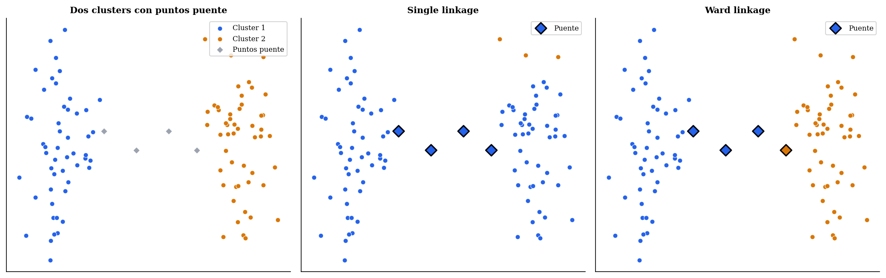
Complete linkage (enlace completo): la distancia entre clusters es la distancia máxima entre cualquier par de puntos de ambos clusters:
Produce clusters compactos y de diámetro similar, ya que solo fusiona clusters cuando sus puntos más alejados también están razonablemente cerca. Esto lo hace también sensible a outliers en el sentido opusto del single linkage. En este caso un punto extremo puede aumentar el diámetro de un cluster y retrasar su fusión. Puede producir clusters que no son geométricamente conexos, fusionando trozos de clusters naturales distintos si eso produce un diámetro menor.
Average linkage (UPGMA): la distancia entre clusters es la media de todas las distancias entre pares de puntos de ambos clusters:
Ofrece un equilibrio entre single y complete linkage, siendo menos sensible a outliers que single y menos sesgado hacia clusters esféricos que complete.
Linkage de Ward: en lugar de medir distancias entre puntos, mide el incremento en la varianza intra-cluster que se produciría al fusionar dos clusters. Formalmente, si \(\bar{\mathbf{x}}_{C}\) es el centroide del cluster \(C\), esta métrica se calcula como:
Ward fusiona los clusters cuya unión produzca el menor aumento de varianza total. Tiende a producir clusters compactos y equilibrados, y es el criterio más utilizado en la práctica. Es el que guarda mayor relación conceptual con K-Means, ya que ambos minimizan la varianza intra-cluster.
Nota: Ward solo está bien definido con distancia euclídea al cuadrado. Si se trabaja con otras métricas (por ejemplo, distancia de Manhattan o correlación), se debe usar average o complete linkage.
En la Figura 5 observamos una comparativa de diferentes métricas de linkage. Vemos que el linkage single produce el efecto de encadenamiento cuando tenemos dos grupos de puntos que "se tocan", mientras que en complete, cuando tenemos grupos con diámetro muy grande, a veces prefiere unir un trozo del grupo grande a otro cluster si así consigue un diámetro más pequeño. Si bien el linkage complete produce clusters equilibrados en diámetros, los linkages average y Ward producen clusters equilibrados en distancia media a todos los puntos y en la varianza intra-cluster, respectivamente.
{kind=link}
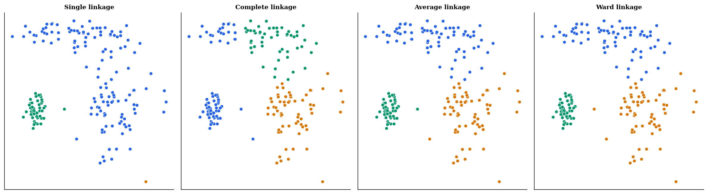
El dendrograma¶
El dendrograma es la representación gráfica del proceso de fusión. El eje horizontal muestra los puntos (u hojas del árbol), y el eje vertical indica la distancia o disimilitud a la que se produce cada fusión. Las ramas del árbol se unen a la altura correspondiente a esa distancia (ver Figura 6).
{kind=link}
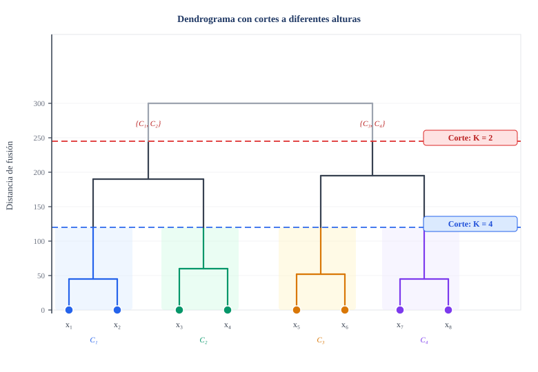
Para obtener una partición en \(K\) clusters, realizamos un corte horizontal del dendrograma. El número de ramas verticales que cruza dicho corte determina el número de clusters. El problema de seleccionar \(K\) se convierte así en el problema de elegir la altura del corte.
Pero, ¿cómo elegimos dónde cortar?. La heurística más común consiste en buscar el salto vertical más grande entre dos fusiones consecutivas. Una distancia de fusión mucho mayor que la anterior indica que se han tenido que unir clusters que eran naturalmente distintos. La altura justo por debajo de ese salto suele ser la elección más adecuada. Podemos ver esto ejemplificado en la Figura 7.
{kind=link}
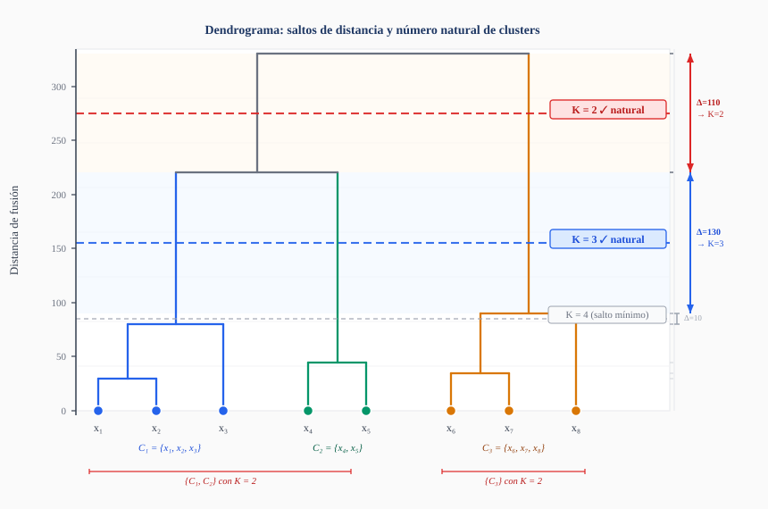
Aunque el clustering aglomerativo tiene su propio criterio de selección de \(K\) a través de los saltos en la distancia de fusión en el dendrograma, podemos buscar estrategias más robustas combinando este criterio con otros criterios como Silhouette o CH. De esta forma, se utilizaría el dendrograma para identificar una serie de valores \(K\) candidatos a partir de los saltos más pronunciados, y posteriormente se confirmaría esa selección con otro de los criterios, como se muestra en la Figura 8.
{kind=link}
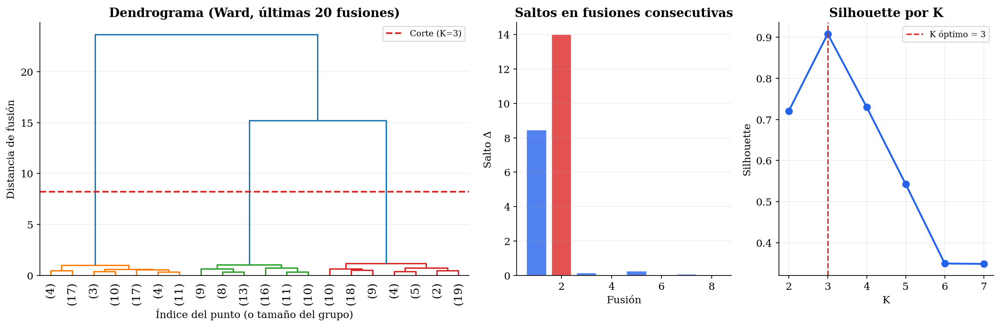
Complejidad computacional¶
La complejidad del clustering aglomerativo depende de la implementación. La versión naïve, que recalcula todas las distancias entre clusters en cada paso, tiene complejidad \(O(N^3)\) en tiempo y \(O(N^2)\) en espacio. Con el algoritmo de Murtagh (Murtagh, 1983)8 y la estructura de datos adecuada se puede reducir a \(O(N^2 \log N)\) para la mayoría de linkages, y a \(O(N^2)\) para single linkage con el algoritmo SLINK (Sibson, 1973)9. En cualquier caso, la dependencia cuadrática en espacio necesaria para almacenar la matriz de distancias limita su aplicabilidad a datasets de tamaño moderado (típicamente, no más de unas decenas de miles de puntos).
Implementación en sklearn¶
En sklearn el clustering aglomerativo está disponible en AgglomerativeClustering. A diferencia de K-Means, este estimador no implementa el método predict, ya que el modelo jerárquico no generaliza a nuevos puntos sin reajustar. El resultado es una partición de los datos de entrenamiento, no un clasificador.
# Siempre escalar antes de clustering basado en distancias
X_scaled = StandardScaler().fit_transform(X)
modelo = AgglomerativeClustering(
n_clusters=3, # Número de clusters tras el corte
metric='euclidean', # Métrica de distancia entre puntos individuales
linkage='ward', # Criterio de linkage: 'ward', 'complete', 'average', 'single'
compute_full_tree=True # Necesario para visualizar el dendrograma completo
)
etiquetas = modelo.fit_predict(X_scaled)
Los parámetros más relevantes son:
-
n_clusters: número de clusters deseado. Determina la altura del corte en el dendrograma. Si se establece aNone, se construye el árbol completo y se puede usar conjuntamente condistance_thresholdpara cortar por distancia en lugar de por número de clusters. -
metric: métrica para calcular distancias entre puntos individuales. Acepta'euclidean','l1','l2','manhattan','cosine'o'precomputed'. Conlinkage='ward'solo puede usarse'euclidean'. -
linkage: criterio de fusión. Las opciones son'ward','complete','average'y'single'. La elección tiene un impacto decisivo en el resultado, como hemos visto. -
distance_threshold: si se establece (yn_clusters=None), el árbol se corta en la distancia indicada en lugar de a un número fijo de clusters. Útil cuando no se conoce \(K\) a priori y se prefiere trabajar con un umbral de disimilitud máxima. -
compute_distances: si esTrue, almacena enmodelo.distances_las distancias de cada fusión, lo que permite dibujar el dendrograma.
Para visualizar el dendrograma es necesario usar la función dendrogram de scipy, que trabaja con la representación de linkage que produce scipy.cluster.hierarchy.linkage:
from scipy.cluster.hierarchy import dendrogram, linkage
import matplotlib.pyplot as plt
# scipy calcula el linkage de forma independiente a sklearn
Z = linkage(X_scaled, method='ward', metric='euclidean')
plt.figure(figsize=(10, 5))
dendrogram(
Z,
truncate_mode='lastp', # Mostrar solo las últimas p fusiones
p=20, # Número de fusiones a mostrar
show_leaf_counts=True, # Mostrar número de puntos en cada hoja
leaf_rotation=90
)
plt.axhline(y=7.5, color='red', linestyle='--', label='Corte propuesto')
plt.xlabel('Índice del punto (o cluster)')
plt.ylabel('Distancia de fusión')
plt.legend()
plt.show()
Nota: sklearn y scipy mantienen implementaciones separadas del clustering jerárquico. Para obtener los clusters se usa
AgglomerativeClusteringde sklearn. Para visualizar el dendrograma resulta más cómodo usarscipy.cluster.hierarchy, ya que sklearn no proporciona directamente la función de visualización.
Flujo de trabajo¶
Un aspecto importante de la implementación es la normalización previa. El clustering aglomerativo, al estar basado en distancias, es sensible a la escala de las variables. Si una variable tiene valores en el rango \([0, 1]\) y otra en el rango \([0, 10000]\), la segunda dominará todas las distancias. Por ello es casi siempre necesario aplicar StandardScaler antes de ajustar el modelo.
Como hemos visto en la implementación, hay dos formas alternativas de seleccionar el número de clases \(K\): utilizar n_classes para establecer un número específico de clases o proporcionar distance_threshold para cortar cuando encontremos un salto mayor a la distancia indicada y determinar así \(K\) a partir de los saltos. El problema de esta segunda forma es que no conocemos de antemano la distribución de saltos en el dendrograma.
Por este motivo, en la práctica el flujo de trabajo habitual consistirá en construir y representar mediante scipy el dendrograma, inspeccionando el rango de distancias y seleccionando el corte a partir de esta información:
from scipy.cluster.hierarchy import linkage, dendrogram, fcluster
import matplotlib.pyplot as plt
# Paso 1: construir la jerarquía y visualizar
Z = linkage(X_scaled, method='ward')
plt.figure(figsize=(10, 5))
dendrogram(Z, truncate_mode='lastp', p=20) # mostrar solo las últimas 20 fusiones
plt.ylabel('Distancia de fusión')
plt.show()
# Paso 2: tras inspeccionar el dendrograma, elegir K o umbral
# Opción A: cortar por número de clusters
etiquetas = fcluster(Z, t=3, criterion='maxclust')
# Opción B: cortar por umbral de distancia
etiquetas = fcluster(Z, t=10.0, criterion='distance')
Una vez hecho esto, podemos utilizar AgglomerativeClustering con el número de clases \(K\) o el umbral de distancia elegido para obtener las etiquetas finales.
Reducción de la dimensionalidad¶
Hasta ahora hemos aplicado el clustering aglomerativo sobre las observaciones, esto es, cada punto del dataset es un objeto que se agrupa con otros similares. El mismo algoritmo puede aplicarse de forma transpuesta sobre las variables, de forma que en lugar de agrupar filas agrupamos columnas. El resultado es una forma de reducción de dimensionalidad que reemplaza grupos de variables similares por una única variable representativa de cada grupo.
La motivación de este enfoque viene de que en muchos datasets reales, especialmente en bioinformática, señales de sensores o datos de texto, existe alta redundancia entre variables, como por ejemplo un grupo de genes que se coexpresan, un conjunto de sensores que miden fenómenos relacionados, o un conjunto de términos sinónimos en una representación de texto. En lugar de aplicar PCA, que produce componentes abstractas difíciles de interpretar, el clustering de variables agrupa las originales y produce representaciones que mantienen la interpretabilidad.
En sklearn esta funcionalidad está disponible en FeatureAgglomeration, que aplica clustering aglomerativo sobre las columnas del dataset y reemplaza cada grupo de variables por su media:
Es conveniente prestar atención a la métrica sobre la que se calcula la similitud entre variables. Por defecto se usa la distancia euclídea entre los vectores de observaciones de cada variable, es decir, dos variables son similares si sus valores numéricos son parecidos punto a punto. Sin embargo, en muchos casos es más adecuado usar la correlación de Pearson como medida de similitud, ya que dos variables pueden tener escalas muy distintas pero un patrón de variación idéntico, y son esas variables las que conviene agrupar. Para ello se puede pasar metric='correlation' con linkage='average' (ya que Ward requiere distancia euclídea y no es compatible con métricas de correlación).
En la Figura 9 se muestra un ejemplo de aplicación de FeatureAgglomeration para reducir la dimensionalidad, y se compara con otro método de reducción de dimensionalidad como PCA. En la fila superior izquierda se muestra la matriz de correlación de features originales, y a la derecha se muestran las features ordenadas por grupos tras aplicar FeatureAgglomeration. En la fila inferior se evalúa la reducción de dimensionalidad: a la izquierda se muestra la correlación entre las features prototipo obtenidas mediante el promedidado de las columnas agrupadas y las features originales, y a la derecha se muestra la correlación entre las \(4\) componentes principales encontradas por PCA y las features originales. Podemos observar que en el caso de PCA todas las features participan de forma más equilibrada en las diferentes componentes, mientras que FeatureAgglomeration está más enfocado minimizar la correlación entre las features agrupadas.
{kind=link}
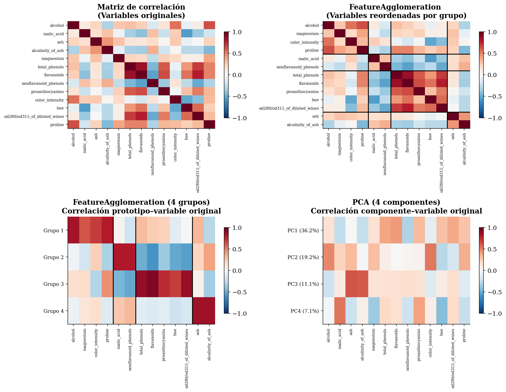
FeatureAgglomeration, y comparación con PCA. Clustering espectral¶
El clustering espectral (Ng et al., 2002; Shi & Malik, 2000)10 11 aborda una limitación fundamental de K-Means y del clustering aglomerativo con Ward, y es que estos métodos trabajan en el espacio original de características y tienden a encontrar clusters convexos (en el caso de K-Means, exactamente esféricos). Sin embargo, muchos conjuntos de datos tienen estructuras no convexas, como dos círculos concéntricos, espirales entrelazadas o formas de media luna que estos métodos no pueden separar correctamente (ver Figura 10).
{kind=link}
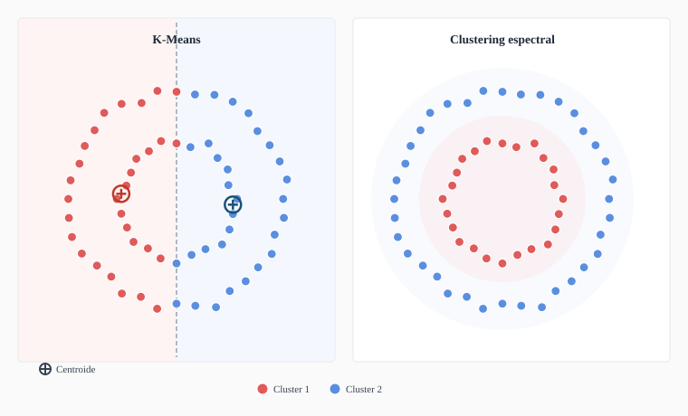
La idea del clustering espectral es transformar el espacio de representación utilizando herramientas de teoría de grafos, de forma que los clusters naturales de los datos se conviertan en regiones linealmente separables en el nuevo espacio. Una vez realizada esa transformación, basta aplicar K-Means.
Filosofía divisiva e inspiración espectral¶
Antes de desarrollar el algoritmo, conviene situar el clustering espectral en relación con los enfoques jerárquicos que hemos visto.
La variante divisiva del clustering jerárquico divide recursivamente el conjunto completo de datos. El reto es definir un criterio de división que sea significativo a nivel global, no solo local. Una opción natural es formular la división como un problema de corte de grafo, es decir, construir un grafo donde los nodos son los puntos de datos y los arcos representan la similitud entre ellos, y buscar la partición que minimice las conexiones entre los dos grupos resultantes.
Este problema de graph cut óptimo tiene, en su versión exacta, complejidad exponencial. Sin embargo, su relajación continua, es decir, permitir asignaciones fraccionarias en lugar de binarias, conduce directamente a un problema de autovalores sobre la matriz laplaciana del grafo (Shi & Malik, 2000)10. Los autovectores de esta matriz son, en ese sentido, la solución relajada del problema de partición óptima.
El clustering espectral estándar aplica este principio para encontrar \(K\) clusters simultáneamente (no de forma recursiva), pero la conexión con la filosofía divisiva es directa, ya que la teoría espectral de grafos proporciona el fundamento matemático que el enfoque divisivo necesitaba para ser computable de forma eficiente.
Construcción del grafo de similitud¶
El primer paso es representar los datos como un grafo \(G = (V, E)\), donde cada nodo \(v_i \in V\) es un punto de datos y cada arista \((v_i, v_j) \in E\) tiene un peso \(w_{ij}\) que refleja la similitud entre \(\mathbf{x}_i\) y \(\mathbf{x}_j\). Los tres esquemas más comunes son:
- Grafo KNN: conectar cada punto con sus \(K\) vecinos más cercanos. Produce grafos dispersos y es eficiente computacionalmente.
- \(\varepsilon\)-neighborhood: conectar todos los pares con distancia inferior a \(\varepsilon\). La elección de \(\varepsilon\) puede ser difícil.
- Grafo completo ponderado: conectar todos los pares con peso dado por la similitud gaussiana (RBF):
Donde \(\sigma\) es un parámetro que controla el radio de influencia de cada punto. Esta es la opción más habitual.
En la implementación de sklearn encontraremos un parámetro gamma (\(\gamma\)) con la equivalencia:
Es decir, valores pequeños de \(\gamma\) corresponderán a valores altos de \(\sigma\), con lo cual cada punto afectará a un radio de vecindad más amplio (estamos "acercando") los puntos, lo cual podría llegar a conectar grupos de puntos alejados entre si. Por el contrario, con un valor alto de \(\gamma\) corresponde a un valor pequeño de \(\sigma\), y lo que hará es afectar a un radio de vecindad menor, lo cual podría llegar a fragmentar la estructura en exceso. El ajuste de este parámetro resulta crítico, y una posible forma de abordarlo es mediante un análisis de la distribución de distancias entre los vecinos más cercanos en el dataset de entrada.
La matriz Laplaciana¶
A partir de la matriz de similitud \(W\) (con elementos \(w_{ij}\)) se construyen las siguientes matrices:
- Matriz de grado \(D\): matriz diagonal con \(D_{ii} = \sum_j w_{ij}\), que recoge el peso total de las conexiones de cada nodo.
- Laplaciana no normalizada: \(L = D - W\).
- Laplaciana normalizada (Shi & Malik): \(L_{\text{sym}} = D^{-1/2} L D^{-1/2} = I - D^{-1/2} W D^{-1/2}\).
La propiedad fundamental de la Laplaciana es que el número de autovalores iguales a cero de \(L\) es igual al número de componentes conexas del grafo. Cuando hay \(K\) componentes completamente desconectadas, la Laplaciana tiene \(K\) autovalores nulos y los autovectores correspondientes son indicadores binarios de cada componente (cada elemento del vector nos indica si el correspondiente nodo del grafo pertenece o no a la componente).
Criterios de corte¶
La construcción del grafo y la Laplaciana es la base del clustering espectral, pero el objetivo que buscamos optimizar es un criterio de corte de grafo. Hay dos formulaciones principales que dan lugar a variantes distintas del algoritmo.
Dado un grafo con \(K\) clusters \(C_1, \ldots, C_K\), definimos el corte de un cluster como la suma de pesos de las aristas que lo conectan con el resto de clusters:
Minimizar directamente la suma de cortes \(\sum_k \text{cut}(C_k, \bar{C}_k)\) no es un buen criterio, ya que favorece soluciones degeneradas donde un cluster tiene un único punto y el resto forman un cluster enorme. Esto es así porque un cluster pequeño tiene pocas aristas que cortar y su coste de separación es mínimo. Vamos a ver dos formulaciones que resuelven esto normalizando el corte.
Ratio Cut (Hagen & Kahng, 1992)12 normaliza por el número de puntos de cada cluster:
La normalización por \(|C_k|\) penaliza los clusters muy pequeños. Un cluster de un solo punto tendría un denominador mínimo y por lo tanto un gran peso en la suma, lo que desincentiva esa solución degenerada. La relajación continua de este problema de optimización discreto conduce a los autovectores de la Laplaciana no normalizada \(L = D - W\).
Normalized Cut (Shi & Malik, 2000)10 normaliza por el volumen del cluster, definido como la suma de grados de sus nodos:
Normalizar por el volumen en lugar del tamaño tiene en cuenta la densidad de conexiones de cada cluster. Esto es, un cluster con nodos muy conectados tiene volumen alto aunque tenga pocos puntos. De esta forma, NCut favorece particiones que preservan comunidades con muchas conexiones internas, en lugar de simplemente equilibrar el número de puntos en cada grupo. La relajación continua de NCut conduce a los autovectores de la Laplaciana normalizada \(L_{\text{sym}} = D^{-1/2}(D-W)D^{-1/2}\).
Nota: El paper original de Shi y Malik (Shi & Malik, 2000)10 formula NCut como una bipartición recursiva: en cada paso se resuelve el problema para \(K=2\), cuya solución viene dada por el segundo autovector de \(L_{\text{sym}}\), y se divide el grafo en dos partes, aplicando el proceso recursivamente a cada subgrafo. El algoritmo de Ng, Jordan y Weiss (Ng et al., 2002)11 que veremos a continuación generaliza este enfoque calculando los \(K\) autovectores simultáneamente, evitando la recursión y siendo más eficiente cuando \(K>2\).
La elección entre ambas Laplacianas no es arbitraria, sino que refleja cuál de los dos criterios se está optimizando. En la práctica NCut y la Laplaciana normalizada son la opción preferida, y es la que implementa sklearn por defecto.
Espectro de la Laplaciana¶
Como hemos mencionado, una de las propiedades de la matriz Laplaciana es que a partir de su espectro (autovalores y autovectores) podemos obtener las diferentes componentes desconectadas que existen en el grafo.
El clustering espectral generaliza esta idea al caso en que los clusters no están perfectamente desconectados pero sí poco conectados entre sí. Toma los \(K\) autovectores correspondientes a los \(K\) autovalores más pequeños, y construye con ellos una matriz \(U \in \mathbb{R}^{N \times K}\), en la que:
- Cada fila \(i\) representa un punto de entrada \(\mathbf{x}_i\).
- Cada columna \(k\) es el \(k\)-ésimo autovector de la Laplaciana, que asigna una coordenada a cada uno de los \(N\) puntos.
De esta forma, podemos ver \(U\) como una representación de los \(N\) puntos en un espacio de dimensión \(K\) inducido por la estructura del grafo.
Algoritmo de clustering espectral¶
El algoritmo de Ng, Jordan y Weiss (Ng et al., 2002)11 es la implementación estándar de Normalized Cut, con mejoras en la estabilidad numérica mediante la normalización de filas de \(U\):
Algoritmo 2 — Clustering espectral
Entrada: \(\{\mathbf{x}_1, \ldots, \mathbf{x}_N\}\), \(K\), \(\sigma\)
Salida: Asignación de clusters
\(D \leftarrow\) Matriz diagonal con \(D_{ii} = \sum_j w_{ij}\)
\(L_{\text{sym}} \leftarrow D^{-1/2}(D - W)D^{-1/2} \quad\) (Laplaciana normalizada)
\(U \leftarrow\) Calcular los \(K\) autovectores de \(L_{\text{sym}}\) asociados a los \(K\) autovalores más pequeños
\(\tilde{U} \leftarrow\) Normalizar cada fila de \(U\) para que tenga norma unitaria
Aplicar K-Means a las filas de \(\tilde{U} \in \mathbb{R}^{N \times K}\)
Devolver la asignación de clusters resultante de K-Means
Desde el punto de vista geométrico podemos interpretar que proyectar los datos en el espacio de autovectores de la Laplaciana "desenreda" la estructura del grafo. Puntos densamente conectados entre sí, pertenecientes al mismo cluster natural, se mapean a regiones cercanas en ese nuevo espacio, aunque estuvieran lejos en el espacio original. Es decir, clusters que en el espacio original se entrelazaban se convierten en grupos linealmente separables, donde K-Means funciona correctamente.
El paso de asignación es conceptualmente independiente de la transformación espectral. Ng et al. propusieron inicialmente K-Means como solución pragmática, pero este método tiene como principal debilidad la inicialización aleatoria de los clusters. Trabajos posteriores han desarrollado métodos más directos que explotan la estructura algebraica de \(\tilde{U}\) sin introducir inicializaciones aleatorias. Veremos a continuación que en la implementación de sklearn podremos elegir diferentes métodos para hacer esta asignación.
Implementación en sklearn¶
En sklearn el clustering espectral está disponible en SpectralClustering:
modelo = SpectralClustering(
n_clusters=2, # Número de clusters K
affinity='rbf', # Cómo construir la matriz de similitud
gamma=1.0, # Parámetro sigma de la similitud gaussiana (gamma = 1/(2*sigma^2))
n_neighbors=10, # Usado solo si affinity='nearest_neighbors'
assign_labels='kmeans' # Método para asignar clusters en el espacio transformado
)
etiquetas = modelo.fit_predict(X_scaled)
Los parámetros más importantes son:
n_clusters: número de clusters \(K\). Determina cuántos autovectores se calculan.affinity: cómo se construye la matriz de similitud. Las opciones más comunes son'rbf'(similitud gaussiana, la opción por defecto),'nearest_neighbors'(grafo KNN), o una matriz precalculada pasando'precomputed'.gamma: parámetro de la función de similitud gaussiana, equivalente a \(\frac{1}{2\sigma^2}\). Valores más altos hacen que la similitud decaiga más rápido con la distancia, produciendo grafos más dispersos.assign_labels: método para la asignación final tras la proyección espectral.'kmeans'aplica K-Means estándar, que es eficiente pero sensible a la inicialización.'discretize'busca la asignación binaria más cercana a $\tilde{U} $, siendo más robusto a la inicialización a costa de un mayor coste computacional.'cluster_qr'produce una asignación determinista a partir de los autovectores sin inicialización aleatoria y con menor coste computacional. Esta última es actualmente la opción recomendada en sklearn, aunque no es el valor por defecto por compatibilidad con código anterior.
Nota: El clustering espectral no implementa
predictpor la misma razón que el aglomerativo. No existe una forma natural de proyectar nuevos puntos al espacio espectral sin re-ajustar el grafo completo. Si se necesita predecir sobre nuevos datos, una opción es usar la proyección espectral como preprocesado y entrenar un clasificador en ese espacio (por ejemplo, entrenar un clasificador KNN con los ejemplos de entrada y con las etiquetas obtenidas a partir del clustering espectral como variable objetivo).
Ventajas y limitaciones¶
El clustering espectral detecta clusters de formas arbitrarias y tiene una sólida fundamentación teórica. Sin embargo, su coste computacional es \(O(N^3)\) para el cálculo de autovectores (aunque algunas implementaciones aproximadas lo reducen), lo que lo hace inviable para datasets grandes. Además, el resultado es sensible a la elección de la matriz de similitud y su parámetro \(\sigma\). Un valor incorrecto puede hacer que clusters naturales queden desconectados o que el grafo sea tan denso que no tenga estructura útil.
Biclustering y co-clustering¶
Antes de cerrar el clustering espectral, conviene mencionar dos variantes relacionadas que también se basan en álgebra espectral pero con un objetivo diferente.
El biclustering (Kluger et al., 2003)13 agrupa simultáneamente las filas y las columnas de una matriz de datos. En lugar de buscar grupos de observaciones con características similares, busca submatrices donde un subconjunto de observaciones comparten un patrón coherente en un subconjunto de variables. Su aplicación más conocida es en bioinformática: encontrar grupos de genes que se co-expresan en grupos de condiciones experimentales. Este tipo de agrupación suele crear en la matriz una visualización de tipo "tablero de ajedrez" (ver Figura 11). Es decir, los datos de cada fila pueden estar organizados en varios biclusters de columnas, y los datos de cada columna en varios biclusters de filas.
{kind=link}
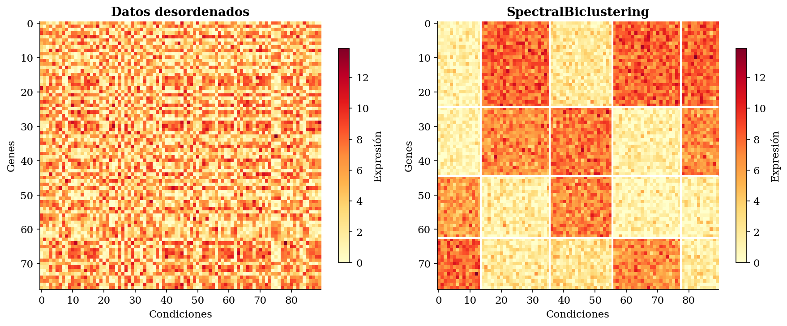
El co-clustering (también llamado block clustering) es un término a veces usado como sinónimo de biclustering, aunque en algunos contextos se reserva para el caso en que la partición de filas y columnas son mutuamente dependientes, es decir, la asignación de grupos de filas depende de la agrupación de columnas y viceversa. Es decir, en este caso que cada fila y columna corresponde exactamente a un bicluster. Esto provoca que la matriz resultante concentre los valores más altos en bloques de su diagonal (ver Figura 12).
{kind=link}
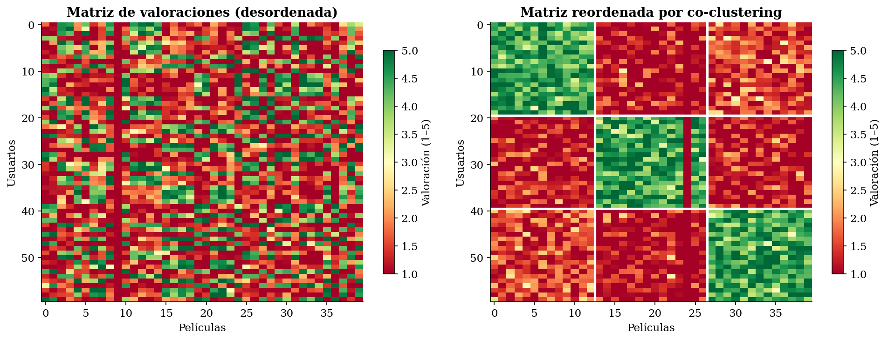
La Figura 13 ilustra las diferencias conceptuales entre bi-clustering (derecha) y co-clustering (izquierda). Bi-clustering es un caso más general, donde podemos encontrar bloques parciales o solapados, distribuidos a lo largo de la matriz, mientras que el co-clustering es un caso más concreto en el que tenemos una partición exhaustiva y disjunta, con todos los bloques de agrupaciones en la diagonal de la matriz.
{kind=link}
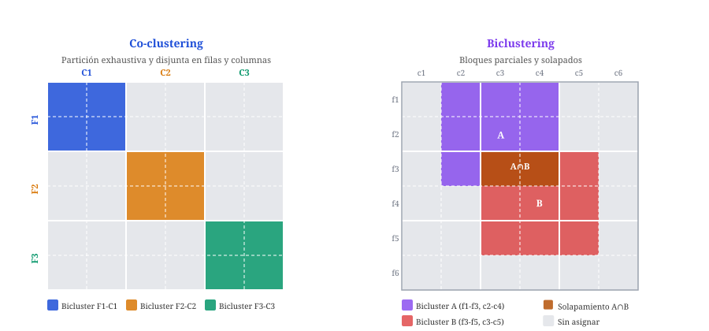
Tanto biclustering como co-clustering son extensiones del clustering espectral al caso bidimensional y no deben confundirse con el clustering espectral estándar, que solo agrupa observaciones.
En sklearn encontramos las implementaciones SpectralBiclustering y SpectralCoclustering de estos métodos.
Consideraciones finales¶
En esta sesión hemos visto dos grandes enfoques del clustering que buscan construir una representación auxiliar de los datos (la jerarquía de fusiones en el caso aglomerativo, la proyección espectral en el caso espectral) para luego extraer una partición de ella.
Ambos superan a K-Means en flexibilidad:
- El clustering aglomerativo no requiere especificar \(K\) a priori y ofrece toda la jerarquía de posibles particiones
- El clustering espectral detecta formas arbitrarias imposibles para K-Means.
Pero ninguno de estos métodos escala a millones de puntos.
Conviene recordar también la elección del linkage en el clustering aglomerativo, que tiene un efecto tan drástico como la elección del kernel en las SVMs.
En las próximas sesiones estudiaremos dos métodos que abordan las limitaciones restantes de lo visto hasta ahora:
-
DBSCAN responde a la pregunta "¿qué ocurre cuando los clusters tienen densidades distintas y no sabemos cuántos hay?". Trabaja directamente en el espacio de densidad, no requiere \(K\) y detecta outliers de forma natural.
-
GMM (Gaussian Mixture Models) responde a otra pregunta: "¿podemos asignar probabilidades en lugar de etiquetas duras?". Al modelar los datos como una mezcla de gaussianas, GMM produce un soft clustering con base estadística formal, permite clusters elípticos y ofrece criterios estadísticos (BIC, AIC) para elegir \(K\).
Juntos, DBSCAN y GMM cubren los casos donde el clustering aglomerativo y el espectral tienen dificultades, como por ejemplo en datasets grandes con formas irregulares y densidades variables, o en situaciones donde la incertidumbre en la asignación es información relevante.
-
Aggarwal, C. C., Hinneburg, A., & Keim, D. A. (2001). On the surprising behavior of distance metrics in high dimensional space. Proceedings of the 8th International Conference on Database Theory (ICDT), 420--434. ↩
-
Rousseeuw, P. J. (1987). Silhouettes: A graphical aid to the interpretation and validation of cluster analysis. Journal of Computational and Applied Mathematics, 20, 53--65. ↩
-
Davies, D. L., & Bouldin, D. W. (1979). A cluster separation measure. IEEE Transactions on Pattern Analysis and Machine Intelligence, 1(2), 224--227. ↩
-
Caliński, T., & Harabasz, J. (1974). A dendrite method for cluster analysis. Communications in Statistics, 3(1), 1--27. ↩
-
Moulavi, D., Jaskowiak, P. A., Campello, R. J. G. B., Zimek, A., & Sander, J. (2014). Density-based clustering validation. Proceedings of the 2014 SIAM International Conference on Data Mining (SDM), 839--847. ↩
-
Hubert, L., & Arabie, P. (1985). Comparing partitions. Journal of Classification, 2(1), 193--218. ↩
-
Strehl, A., & Ghosh, J. (2002). Cluster ensembles --- a knowledge reuse framework for combining multiple partitions. Journal of Machine Learning Research, 3, 583--617. ↩
-
Murtagh, F. (1983). A survey of recent advances in hierarchical clustering algorithms. The Computer Journal, 26(4), 354--359. ↩
-
Sibson, R. (1973). SLINK: An optimally efficient algorithm for the single-link cluster method. The Computer Journal, 16(1), 30--34. https://doi.org/10.1093/comjnl/16.1.30 ↩
-
Shi, J., & Malik, J. (2000). Normalized cuts and image segmentation. IEEE Transactions on Pattern Analysis and Machine Intelligence, 22(8), 888--905. ↩↩↩↩
-
Ng, A. Y., Jordan, M. I., & Weiss, Y. (2002). On spectral clustering: Analysis and an algorithm. Advances in Neural Information Processing Systems, 14, 849--856. ↩↩↩
-
Hagen, L., & Kahng, A. B. (1992). New spectral methods for ratio cut partitioning and clustering. IEEE Transactions on Computer-Aided Design of Integrated Circuits and Systems, 11(9), 1074--1085. ↩
-
Kluger, Y., Basri, R., Chang, J. T., & Gerstein, M. (2003). Spectral biclustering of microarray data: Coclustering genes and conditions. Genome Research, 13(4), 703--716. ↩